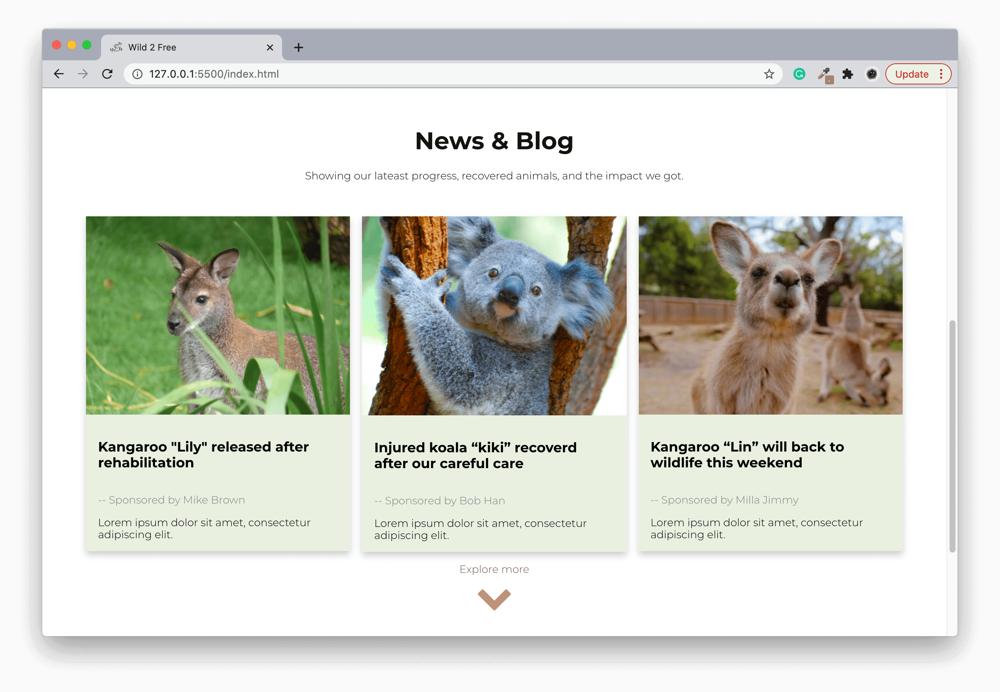

Reflection on Proposal
In the previous proposal, I conducted lots of background and user research to figure out my target audience and the main concept of my website. Based on these, I iterated my ideas and made the final mock-ups , which received quite good feedback from both my tutor and my peers, and I was satisfied with the design choice I did as well. Thus, the most challengeable things for me was to overcome technical problems and implement all of the designs into the real website, which was expected to resemble mock-ups as much as possible. During this process, I also conducted along with self-reflection and refinements that demonstrated as below:
Iteration
Homepage
In order to resonate strongly with the viewers at the beginning, this website will display the serious impact of bushfire 2020 which everyone familiar with. This photo gives people a great shock from a visual point of view, then make people understand firstly how much these animals need help. To strengthen this effect, I decide to remove the down-arrow on this page to make this photo bigger. Meanwhile, the colour theme I choose is to match with this photo, on the one hand, to fit the tone of dreariness as well.
This part aims to continuously provide feedback for our donors, which will certify all of the actions conducted by this organisation are authentic, meaningful and have a great impact on local wildlife and nature. What’s more, based on users feedback, I have changed left and right switch button to a drop-down arrow, because most of the typography for this website was designed to browse vertically, except this horizontally browse option. Thus, this refinement will keep the conveniency and consistency for scanning news and blog.
It seems limited to change to another photo by the responsive CSS method without Javascript. Thus, in the end, I made a responsive screen like below for the mobile device. Due to this tiny problem, the homepage part is not as good as mock-ups, but the ‘news & blog’ part runs pretty well through a responsive CSS way.
"Cloud pets" page


For content part, this page contains one of the most important features for this website which is providing a special connect with such cute wildlife. People can not only donate to help them, but also adopt them online via this website. Donors can have a video link with their adopted animal, and watch them, feed them, even interact with them by video. It is very meaningful for people to experience the whole process of helping wildlife rehabilitate from great trauma in a bushfire. For the design part, I was satisfied with the layout shown in mock-ups. But in order to keep the consistency of card-like poster in ‘News’ part and vertical reading style, I rearranged the layout of each part and using “down-arrow” sign instead of the button, which was consistent and tidy for looking.
Vertical card-like posters run quite well through CSS responsive on the mobile screen size. Meanwhile, the portraits of animals are dominant on the screen. This kind of element placement will emphasis wildlife and obtain more attention as well.
"About us" page


In “about us” pages, the content is divided into three parts by three circles with the most important aspects of this charity. The layout and design elements are relatively simple and clean for introducing basic information. In this way, people can quickly know about this organisation and get closer with it by this easy-understand but also appealing content. On the other hand, the major task is to implement this design into the website level as much as possible. In the end, it has been achieved.
Similarly, all of the contents are allocated into a mobile screen with a smooth translation well. Especially for circle elements that are extremely suitable for vertical reading style, which is noticeable and vivid, while still left some space on the page. Through combining this pattern with words, a simple and effective content display method can be applied.
"Donate" page
For donation page, as mentioned by the proposal, donors want to know more about where their money goes, and how the organisation spend their money. Therefore, I decided to explain some specific usage of money(like What can 5 dollars do? how about 50? ) when donors hesitate whether to donate or not, they will know how specific they can help wildlife. Whilst through a design of subscribing function from Wild 2 Free, they will receive feedback and update after donation. In this way, donors can feel how actually helps they give are beneficial to animals, and wildlife is not far away from their life. On the other hand, due to the limitation of javascript, it seems impossible to make a slideshow function via CSS. Thus, “slideshow” function is removed there.
Mobile version was fully implemented except slight background colour changes, and nothing different from mock-ups. Half image and half form have applied symmetrical design to create balance through equally weighted elements. This kind of visual impact will hold the viewer’s eye to follow the page content rather than sliding off it.
References
- BushfireHelp. (2020). Retrieved from: https://www.bushfirehelp.org/organisations/wild-2-free-kangaroo-sanctuary
- Font Awesome. (2020). The Iconic Font and CSS Toolkit. Retrieved from: https://fontawesome.com/v4.7.0/
- Gofundme. (2020). Retrieved from: https://au.gofundme.com/
- World Animal Protection. (2020).Our beliefs we move the world to protect animals. Retrieved from: https://www.worldanimalprotection.org.uk/about/our-beliefs
- World Animal net (2020). Targeted Research. Retrieved from: http://worldanimal.net/targeted-research
- Wild 2 Free (2020). WILD 2 FREE INC. Retrieved from: https://wild2free.org.au/
- Tomitsch, M., Wrigley, C., Borthwick, M., Ahmadpour, N., Frawley, J., Kocaballi, B., ... & Loke, L. (2018). Design. Think. Make. Break. Repeat. A handbook of methods. Bis Publishers.